In a previous example we demonstrated the solution of the 2D driven cavity problem using oomph-lib's 2D Taylor-Hood and Crouzeix-Raviart Navier-Stokes elements on a uniform mesh. The computed solution was clearly under-resolved near the corners of the domain where the discontinuity in the velocity boundary conditions creates pressure singularities.
In this example we shall re-solve the driven cavity problem with the refineable versions of oomph-lib's quadrilateral Navier-Stokes elements – the RefineableQTaylorHoodElement<2> and the RefineableQCrouzeixRaviartElement<2>. Enabling spatial adaptivity for this problem involves the same straightforward steps as for a scalar problem:
- The domain must be discretised with a refineable mesh, i.e. a mesh that is derived from the
RefineableMeshclass. - An
ErrorEstimatorobject must be specified.
Two additional steps tend to be required during the adaptive solution of Navier-Stokes problems:
- Recall that in Navier-Stokes problems in which the velocity is prescribed along the entire domain boundary, the pressure is only determined up an arbitrary constant, making it necessary to "pin" one pressure value. If the "pinned" pressure degree of freedom is associated with an element that is unrefined during the mesh adaptation, the "pinned " degree of freedom may no longer exist in the adapted problem. To ensure that exactly one pressure degree of freedom is pinned when re-solving the adapted problem, we recommend using the function
Problem::actions_after_adapt()to- unpin all pressure values, e.g. using the function NavierStokesEquations<DIM>::unpin_all_pressure_dofs(...)
- pin a pressure degree of freedom that is known to exist (e.g. the first pressure degree of freedom in the first element of the mesh – whichever element this may be), e.g. using the function NavierStokesEquations<DIM>::fix_pressure(...)
- unpin all pressure values, e.g. using the function
- The possible presence of hanging nodes in an adapted mesh requires special treatment for elements (e.g. Taylor-Hood elements) in which the pressure is represented by a low-order interpolation between a subset of the element's nodal values. The required tasks are performed by the function which should be calledNavierStokesEquations<DIM>::pin_redundant_nodal_pressures(...)
- before assigning the equation numbers for the first time, and
- after every mesh adaptation.
The driver code discussed below illustrates the use of these functions. The section Comments and Exercises provides a more detailed discussion of the technical details involved in their implementation.
The example problem
We shall illustrate the spatially adaptive solution of the steady 2D Navier-Stokes equations by re-considering the 2D steady driven cavity problem:
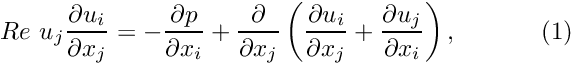 and
![$ D = \left\{x_i \in [0,1]; i=1,2 \right\} $](form_2.png) , subject to the Dirichlet boundary conditions , subject to the Dirichlet boundary conditions 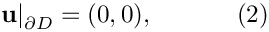 on right, top and left boundaries and
 . . |
![\[ \frac{\partial u_i}{\partial x_i} = 0, \]](form_1.png)
![\[ \left. \mathbf{u}\right|_{\partial D}=(1,0), \ \ \ \ \ \ \ \ \ \ (3) \]](form_4.png)
Solution with Crouzeix-Raviart elements
The figure below shows "carpet plots" of the velocity and pressure fields as well as a contour plot of the pressure distribution with superimposed streamlines for a Reynolds number of  . The velocity vanishes along the entire domain boundary, apart from the bottom boundary 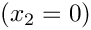 where the moving "lid" imposes a unit tangential velocity which drives a large vortex, centred at 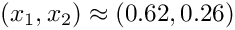. The pressure singularities created by the velocity discontinuities at 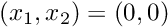 and 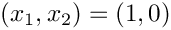 are now much better resolved.
. The velocity vanishes along the entire domain boundary, apart from the bottom boundary 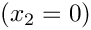 where the moving "lid" imposes a unit tangential velocity which drives a large vortex, centred at 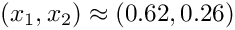. The pressure singularities created by the velocity discontinuities at 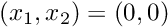 and 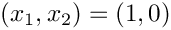 are now much better resolved.
Solution with Taylor-Hood elements
The next figure shows the corresponding results obtained from a computation with adaptive Taylor-Hood elements.
Global parameters and functions
The global namespace used to define the problem parameters is identical to the one in the non-adaptive version.
The driver code
The main driver code is virtually identical to that in the non-adaptive version. We specify the appropriate refineable element types and use the black-box adaptive Newton solver, allowing for up to three levels of spatial adaptivity.
The problem class
Most of the problem class is identical to that in the non-adaptive version of the code : We provide a constructor and destructor and use the function Problem::actions_before_newton_solve() to (re-)assign the boundary conditions.
As discussed in the introduction, we use the function Problem::actions_after_adapt() to ensure that, regardless of the mesh adaptation pattern, exactly one pressure degree of freedom is pinned. We start by unpinning all pressure degrees of freedom:
[Note that this function (implemented as a static member function of the NavierStokesEquations<DIM> class) unpins the pressure degrees of freedom in all elements that are specified by the input argument (a vector of pointers to the these elements). This implementation allows certain elements in a mesh to be excluded from the procedure; this is required in problems where a mesh contains multiple element types. In the present problem, the mesh contains only Navier-Stokes elements, so we pass a vector of pointers to all elements in the mesh (returned by the function Mesh::element_pt()] to the function.]
Following the mesh adaptation any redundant nodal pressures must be pinned, so that hanging pressure degrees of freedom are treated correctly. We note that calling this function is essential for Taylor-Hood elements. The function may be executed without any adverse effect for all other Navier-Stokes elements; see Comments and Exercises for more details on the implementation.
Finally, we pin a single pressure degree of freedom (the first pressure value in the first element in the mesh) and set its value to zero.
The remainder of the problem class remains as before.
The problem constructor
The constructor remains largely as before. We create an adaptive mesh, build and assign an error estimator and pin the redundant nodal pressure degrees of freedom.
Post-processing
The post-processing function is identical to that in the non-adaptive version of the code.
Comments and Exercises
Hanging nodes in problems with vector-valued unknowns
We discussed in an earlier example for a scalar (Poisson) problem how oomph-lib's mesh adaptation routines create hanging nodes and how the values that are stored at such nodes are automatically constrained to ensure the inter-element continuity of the solution. The methodology employed for scalar problems is easily generalised to problems with vector-valued unknowns, provided that all unknowns are represented by the same isoparametric interpolation between the elements' nodal values. In such problems, the unknown nodal values at the hanging nodes are constrained to be linear combination of the corresponding values at their "master nodes". The list of "master nodes" and the corresponding "hanging weights" (contained in a HangInfo object) are the same for all unknowns.
To allow the use spatial adaptivity for elements in which different unknowns are represented by different interpolation schemes (e.g. in 2D quadrilateral Taylor-Hood elements where the two velocity components are represented by bi-quadratic interpolation between the values stored at the element's 3x3 nodes, whereas the pressure is represented by bi-linear interpolation between the pressure values stored at the element's 2x2 corner nodes) oomph-lib allows the different nodal values to have their own list of "master nodes" and "hanging weights". This is achieved as follows;
- By default, all nodes are assumed to be non-hanging. This status is indicated by the fact that a
Node'spointer to itsHangInfoobject, accessible via its member functionNode::hanging_pt(), isNULL. - Mesh adaptation may turn a node into a hanging node. A node's "hanging status" is primarily a geometrical/topological property. If a
Nodeis found to be hanging,oomph-lib'smesh adaptation procedures create aHangInfoobject that stores the list of the hanging node's "master nodes" and their respective weights. A pointer to theHangInfoobject is then passed to theNode. The list of master nodes and weights, stored in thisHangInfoobject is then used by the functionNode::position()to determine theNode's(constrained) position. - Nodes also provide storage for separate pointers to
HangInfoobjects for each of their nodal values. These are accessible via the member functionNode::hanging_pt(i)which returns the pointer to theHangInfoobject associated with the node's i-th nodal value. By default, these pointers point to the "geometric"HangInfoobject, accessible via the argument-free version of this function. This default behaviour is appropriate for isoparametric elements in which all unknowns are represented by interpolation between the elements' nodes, using its geometric shape functions as basis functions. - For elements that use different interpolation schemes for different nodal values (e.g. in Taylor-Hood elements), the default assignment for the pointers to the
HangInfoobjects may be over-written. This is task is typically performed by re-implementing (and thus over-writing) the empty virtual functionfor such elements. This function is called automatically during at the end ofRefineableElement::further_setup_hanging_nodes()oomph-lib'smesh adaptation procedures.
Adaptivity for Taylor-Hood elements
The issues
In non-adaptive 2D [3D] Taylor-Hood elements, every node stores (at least) two [three] nodal values which represent the two [three] velocity components. The four corner [eight vertex] nodes store an additional third [fourth] value which represents the pressure. If the mesh is subjected to non-uniform refinement, some of the mid-side nodes in large elements also act as corner nodes for adjacent smaller elements, as illustrated in the figure below.
The figure illustrates that the "hanging status" of the various degrees of freedom can be become fairly involved. For instance
- Node 7 is geometrically hanging, with master nodes 6, 8 and 12. It is not a pressure node.
- Node 8 is geometrically non-hanging, but it is a hanging node for the pressure interpolation. Its pressure master nodes are 6 and 12.
- Node 10 is geometrically hanging, and its geometric master nodes are 6, 8 and 12, while its pressure master nodes are 6 and 12.
To illustrate that oomph-lib's automatic mesh adaptation procedures are able to deal with these cases, the figure below shows a "carpet plot" of the pressure distribution, 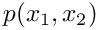, obtained from a (strongly under-resolved) driven-cavity computation on the mesh shown above. The figure illustrates that the hanging node constraints ensure the inter-element continuity of the pressure throughout the domain, and, in particular, along the "right" boundary of the largest element.

Details of the implementation
To facilitate the book-keeping for such problems, all nodes in the refineable Taylor-Hood elements store three [four] nodal values, even though, depending on the mesh's refinement pattern some of the pressure values will not be used. To eliminate the "redundant" pressure degrees of freedom from the problem, we provide the function
which pins the "redundant" pressure degrees of freedom in all elements specified by the input argument (a vector of pointers to the Navier-Stokes elements). This function must be called after the initial mesh has been created, and after each mesh adaptation. The function first pins all nodal pressure values, using the function
and then unpins the nodal pressure values at the elements' corner [vertex] nodes, using the function
These functions are implemented as empty virtual functions in the NavierStokesEquations<DIM> class which provides a base class for all Navier-Stokes elements. The empty functions are overwritten for QTaylorHoodElement<DIM> and remain empty for all other Navier-Stokes elements, therefore they can be called for any element type.
Adaptivity for Crouzeix-Raviart elements
As discussed in the previous example, oomph-lib's isoparametric 2D [3D] Crouzeix-Raviart elements employ a piecewise bi- [tri-]linear, globally discontinuous pressure representation. In each element, the pressure is represented by bi-[tri-]linear basis functions, multiplied by 3 [4] pressure values which are stored in the element's internal Data. Since the pressure representation is discontinuous, the pressure values do not have to be subjected to any constraints to ensure inter-element continuity. Each Node stores two [three] velocity degrees of freedom. Since the velocity representation is isoparametric, the default assignment for the nodal values' HangInfo pointer is appropriate and no further action is required.
Exercises
- Confirm that a warning message is issued if the function
NavierStokesEquations<DIM>::pin_all_nodal_pressure_dofs()is not called following the mesh adaptation. - Investigate how the pressure distribution changes with each adaptation. [Hint: You can call
doc_solution(...)fromactions_after_newton_solve()to document the progress of the mesh adaptation.]
Source files for this tutorial
- The source files for this tutorial are located in the directory:
demo_drivers/navier_stokes/adaptive_driven_cavity/ - The driver code is:
demo_drivers/navier_stokes/adaptive_driven_cavity/adaptive_driven_cavity.cc
PDF file
A pdf version of this document is available.